이미지 속에 갇힌 식품 제품 정보를 꺼내
AI 전용 공식 제품정보 사이트로 발행하고 매달 관리합니다
식품 회사의 영양성분·원재료·알레르기 정보는 대부분 자사몰 상세페이지의 이미지 안에 있습니다. 사람 눈에는 보이지만 AI가 읽어 가는 글자로는 비어 있습니다. 보라말은 이 정보를 꺼내 AI가 읽고 인용하기 좋은 공식 제품정보 사이트로 만들어 줍니다.
보라말이 점검한 식품 회사 17곳의 제품 페이지 51개 중 영양성분표가 본문 글자로 있는 곳
공공 식품영양성분 DB 수집 → AI 이미지 분석 → GEO 가공 → AI 전용 제품정보 사이트 발행
매일유업 공식 제품 가이드(productguide.maeil.com)를 AI에 넣었을 때 제품 사실 정답률(보라말 시험)
무료 AI 성적표 → 90일 시범 2,400만 원 → 월 구독(스타트 450 · 코어 850 · 엔터프라이즈 별도)
| 2027 | 2028 | 2029 | |
|---|---|---|---|
| 연말 고객사 | 3곳 | 8곳 | 14곳 |
| 매출 | 1.8억 원 | 8.3억 원 | 14.4억 원 |
| 영업이익 | -0.2억 원 | 3.8억 원 | 7.4억 원 |
| 인원 | 4명 | 5명 | 7명 |
재무는 보라말 재무 모델(전환율·해지율·인건비 가정 포함)의 기본 시나리오입니다. 흑자 전환 2027년 7월(3개월 평균), 먼저 나가는 돈 최대 0.89억 원. 가격은 VAT 별도 제안가입니다.
최근 3개월 ChatGPT를 쓴 10~50대 비율(2025-12)
오픈서베이 AI 검색 트렌드 리포트 2026, 한국경제 2026-01-28. 주 검색 1순위는 아직 네이버(46%)
AI 검색은 페이지의 글자를 근거로 답을 씁니다. 이미지 속 숫자는 근거로 쓰이기 어렵습니다
아모레퍼시픽·롯데웰푸드 ChatGPT 앱(3~5월), CJ제일제당 자사몰 GEO(9월), 풀무원 GEO 뒤 공식몰 방문 2.3배(9월 발표)
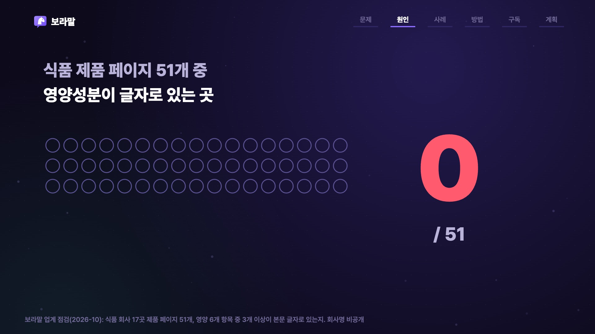
자사몰 상세페이지는 디자인을 위해 통이미지로 만듭니다. 그래서 크롤러가 받아 가는 HTML에는 <img> 태그만 남고 열량·당류·알레르기 같은 글자는 0자입니다.
AI는 공식 정보를 못 찾으면 블로그·쇼핑몰 글로 답을 채웁니다. 기준 용량이 틀리거나 알레르기 정보가 빠진 답이 나오고, 근거 링크도 다른 회사 몫이 됩니다.
영양 6개 항목 중 3개 이상이 본문 글자로 있는 페이지
업계 점검: 보라말, 2026-10-23. 식품 회사 17곳에서 회사당 제품 페이지 3개를 자바스크립트 없이 글자만 받아 측정(AI 수집 프로그램과 같은 방식). 공개 보고서이므로 회사명은 적지 않았습니다. 사진 속 글자를 읽는 AI 모델도 있지만 AI 검색이 그것을 답의 근거로 쓰는지는 공개되어 있지 않습니다.
GEO(Generative Engine Optimization)는 소비자가 ChatGPT·구글 AI 요약 등에 제품을 물을 때 AI가 회사 공식 정보를 찾아 근거로 쓰게 하는 일입니다. 검색 순위보다 사실의 정확성과 출처를 다룹니다.
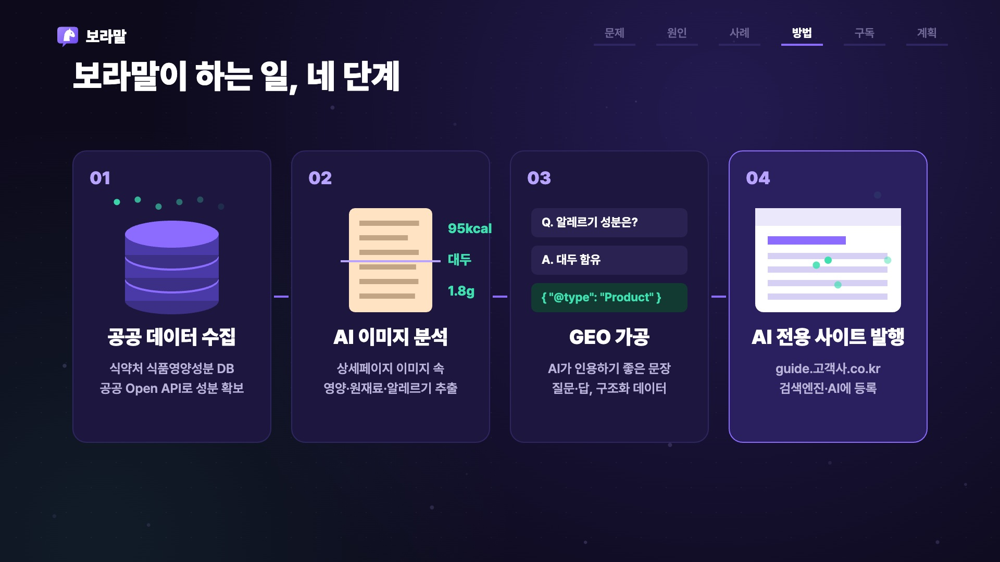
식품의약품안전처 식품영양성분 DB를 공공데이터포털 Open API로 받아 제품별 성분의 기준값을 확보합니다
자사몰 상세 이미지 속 영양정보·원재료·알레르기·보관법을 비전 AI로 읽어 구조화 데이터로 꺼냅니다
두 출처를 대조해 차이를 표시하고, 기준 용량을 밝힌 문장·질문과 답·schema.org 구조화 데이터로 다듬습니다
고객사 하위 주소(guide.고객사.co.kr)에 발행하고 사이트맵·AI 수집 허용·검색엔진 등록 후 매달 다시 잽니다
| 받는 것 | 설명 |
|---|---|
| 공식 제품 가이드 | 제품마다 한 쪽. 포장 표시사항과 일치하는 영양정보·원재료·알레르기·보관법·자주 묻는 질문 |
| AI 성적표 | 같은 질문을 매달 실제 AI에 묻고 포장 표시사항으로 채점한 결과(정답률·출처·오답 사례) |
| 오류 대응 | AI가 틀리게 말하는 항목을 찾아 가이드 문장·구조를 고치고 신제품을 반영 |
| 소유권 | 가이드 파일과 측정 원문은 매달 고객사로 넘깁니다. 보라말이 없어도 사이트는 남습니다 |
저장소의 prototype/boramal_geo.py는 가상 제품(보라 데모 두유)의 상세 이미지 한 장에서 공식 제품정보 사이트까지 자동으로 만듭니다. 실제 회사 데이터는 쓰지 않았습니다.
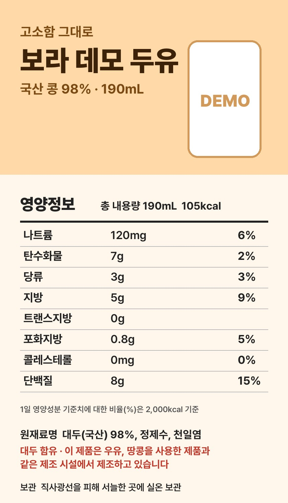
"열량": "105kcal", "당류": "3g", "단백질": "8g",
"allergens": ["대두"], "cross_contact": ["우유","땅콩"]
열량·나트륨·탄수화물·지방·단백질 일치
당류 표시 3g / DB 4.2g, 차이 29% → 사람 확인 목록
제품 페이지(기준 용량을 밝힌 첫 문장, 영양표, FAQ 6개, JSON-LD Product·FAQPage, 출처·확인일), index, sitemap.xml, robots.txt(GPTBot·OAI-SearchBot·ClaudeBot·PerplexityBot 등 허용), llms.txt
공공 API는 공공데이터포털 '식품의약품안전처_식품영양성분DB정보'입니다. 시제품은 키가 없으면 고정 응답(fixtures)을 쓰고, 키(DATA_GO_KR_KEY)를 넣으면 실제 API를 부르며, 응답 필드명은 config.json에서 맞춥니다. 이미지 분석은 Claude 비전 모델(claude CLI)로 했습니다.
보라말은 매일유업 공식 제품 가이드 productguide.maeil.com을 만들어 납품했습니다. 같은 방식을 다른 식품·생활용품 회사에 구독으로 제공하는 것이 이 사업입니다.
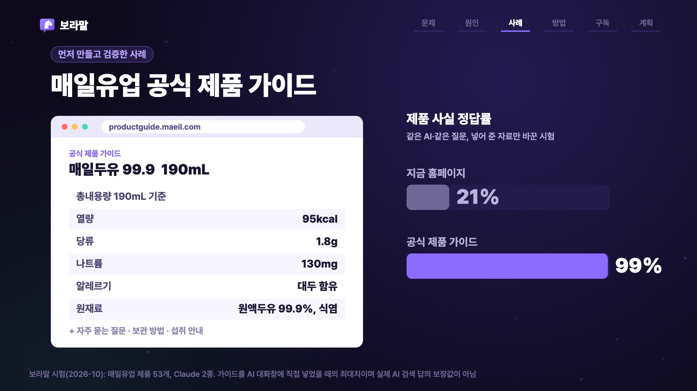
같은 AI·같은 질문에 넣어 준 자료만 바꿈(매일유업 제품 53개)
경쟁 제품 4개와 나란히 주고 하나를 고르게 함(무작위면 20%)
보라말 시험(2026-10-13). 두 시험 모두 자료를 AI 대화창에 직접 넣은 조건이며 Claude 2종을 썼습니다. 99%는 포장 표시사항을 그대로 옮긴 가이드를 준 최대치이지 서비스 보장값이 아닙니다. 실제 AI 검색 답에서의 효과는 고객사 제품 절반만 먼저 올리는 90일 시범으로 고객사마다 측정합니다.
제품 수백 개, 영양·알레르기 정보가 구매를 좌우. 상세페이지가 통이미지
원료·함량·섭취법 질문이 많고 표시 규정이 엄격
전성분·사용법 질문. 같은 구조로 확장
매일유업과 주력 품목이 겹치는 회사는 영업하지 않습니다. 업종별 첫 고객 1곳에는 24개월 가격 고정과 12개월 같은 품목 경쟁사 미수주를 제안합니다.
| 선택지 | 하는 일 | 한계 |
|---|---|---|
| SEO·광고 대행사 | 검색 순위, 키워드, 광고 | AI 답의 사실 정확성은 다루지 않음 |
| 자사몰 GEO 솔루션 | 자사몰 페이지에 AI용 설명·Q&A 추가 | 쇼핑몰 구조를 고쳐야 하고 이미지 속 값 대조는 별도 |
| 사내 웹팀 | 직접 수정 | 매달 AI 답을 재고 고치는 인력·측정 체계가 없음 |
| 보라말 | 이미지 추출 + 공공 DB 대조 + 별도 AI용 사이트 + 매달 측정 | 자사몰을 건드리지 않고 하위 주소 하나로 시작 |
고객사 IT팀 부담은 주소 연결 1건과 가이드 링크뿐
이미지 추출값을 공공 DB와 대조해 틀린 정보를 발행하지 않음
매달 실제 AI에 같은 질문을 던져 성적표로 보고
대행 시세: 전담 GEO 대행 월 500만~2,000만 원(국내 대행사 공개 가격, 2026-10-23 열람). 보라말 스타트 요금 450만 원은 그 하단보다 낮게 잡았습니다.
고객사 제품 10개를 실제 AI에 묻고 포장 표시사항으로 채점한 1장. 첫 미팅에 들고 감
제품 60개 중 30개만 먼저 올려 나머지 30개와 비교. 품질 약속을 못 지키면 전액 환불
측정 · 수정 · 신제품 반영 · 보고. 30일 안 구독 시 구축비 면제
자료 받고 첫 30개 게시
포장 표시사항과 일치
AI가 읽는 글자로
오류 수정·검색엔진 등록
AI가 브랜드를 말하는 비율·순위·매출은 AI 회사가 정하므로 누구도 약속할 수 없습니다. 보라말은 그것을 약속하지 않고 매달 재서 보고합니다. 구독 중 오류는 건당 월 구독료의 2%를 돌려드립니다(월 20% 한도).
| 기간 | 보라말 | 고객사 |
|---|---|---|
| 0주 · 첫 미팅 | 무료 AI 성적표(제품 10개) 설명, 90일 시범 제안 | 실무 책임자 지정 |
| 1~2주 · 수집 | 자사몰 상세 이미지 수집, AI 이미지 분석, 공공 DB 대조, 기준 측정(질문 120개 × 3회) | 포장 표시사항 원본 제공 |
| 3~6주 · 1차 발행 | 무작위로 고른 30개 가이드 작성, 대조표 첨부 | 가이드 승인, 하위 주소 연결 1건 |
| 7~10주 · 비교 | 먼저 올린 30개와 나머지 30개를 같은 질문으로 비교 측정 | 제품 페이지에 가이드 링크 |
| 11~13주 · 보고 | 나머지 30개 게시, 시범 보고서(효과 있음 · 없음 · 판정 불가) | 구독 여부 결정 |
| 매달 · 구독 | 길 내기(링크·점검) → 알리기(검색엔진 등록) → 고치기(오답·신제품) → 다시 재기(성적표) | 신제품 자료 전달, 승인 |
가이드 있음
비교 기준
계절·광고·AI 모델 변화는 두 묶음에 똑같이 작용합니다. 안 올린 30개가 있어야 가이드 효과만 떼어 볼 수 있습니다. 먼저 올린 묶음의 정답률이 우연으로 보기 어려울 만큼 높으면 '효과 있음'으로 판정합니다.
| 시기 | 목표 | 이정표 |
|---|---|---|
| 2026년 11~12월 | 시제품을 서비스용 파이프라인으로(공공 API 키 연결, 이미지 분석 검수 화면, 측정 자동화), 업종별 1순위 회사 성적표 제작 | 성적표 9건 |
| 2027년 상반기 | 업종별 첫 고객 3곳과 90일 시범, 사례 익명 공개 동의 | 시범 3건, 첫 매출 |
| 2027년 하반기 | 시범 → 구독 전환, 운영 매니저 채용 | 구독 3곳, 흑자 전환 |
| 2028년 | 네이버 측정 방법 확보, 코어 요금제 비중 확대, 광고대행사 파트너 채널 | 고객 8곳, 매출 8.3억 |
| 2029년 | 다국어(수출 제품)·계열사 사이트, 뷰티·생활용품 확장 | 고객 14곳, 매출 14.4억 |
매일유업 공식 제품 가이드 기획·납품, 측정 체계 설계, 고객 미팅
추출·대조·발행 파이프라인, 측정 자동화, 사이트 운영
인원은 2027년 말 4명, 2029년 말 7명(재무 모델 가정). 3년 비용 13.5억 원 중 사람 8.0억, AI·클라우드 2.3억. 시나리오: 약세 3년 차 고객 6곳·영업이익 2.1억, 강세 25곳·16.4억.
| 위험·질문 | 대응 |
|---|---|
| 시험 결과일 뿐 아닌가? | 맞습니다. 그래서 실제 AI 답의 효과는 약속하지 않고, 고객사 제품 절반으로 90일 동안 비교해 숫자로 보여 줍니다. 품질 약속을 못 지키면 시범비 전액 환불 |
| AI가 틀린 값을 추출하면? | 공공 DB 대조로 차이 큰 항목을 사람 확인 목록에 올리고, 모든 가이드는 고객사 승인 후 발행. 표본 검수 기준 99.5% 일치를 약속 |
| 한국은 네이버 아닌가? | 네이버 AI 답변은 측정 방법 확보 전이라 숫자·약속을 하지 않습니다. 가이드는 네이버 서치어드바이저에도 등록하고, 코어 요금제는 블로그·스토어용 원고를 제공 |
| AI 회사가 규칙을 바꾸면? | 순위 기술이 아니라 '정확한 공식 글자'를 두는 일이라 규칙 변화에 강합니다. 매달 측정으로 변화를 먼저 발견 |
| 두 명 회사에 맡겨도 되나? | 내부 시스템에 들어가지 않고, 가이드 파일·측정 원문을 매달 넘겨 보라말이 없어도 사이트가 남습니다. 인원은 고객 수에 맞춰 늘림 |
| 공공 DB에 없는 제품은? | 포장 표시사항(이미지)이 기준입니다. 공공 DB는 대조·보충용이라 없어도 발행 가능 |
| 표시·광고 규정 | 포장 표시사항에 있는 사실만 옮기고 효능 표현을 새로 쓰지 않습니다. 계약 전 법무 확인 |
| 경쟁사 진입 | 업종별 첫 고객 조건(같은 품목 12개월 미수주)으로 사례를 먼저 쌓고, 측정 데이터가 쌓일수록 가공 규칙이 좋아지는 구조 |
모든 숫자는 측정 날짜와 조건을 붙여 씁니다
품질은 보장, AI 답은 측정
가이드·측정 원문은 고객사 자산
사업의 이유 → 내용 → 근거 → 방법 → 돈 → 계획을 8장면으로 설명합니다. 화면 위 진행 막대가 지금 어느 이야기인지 보여 줍니다.
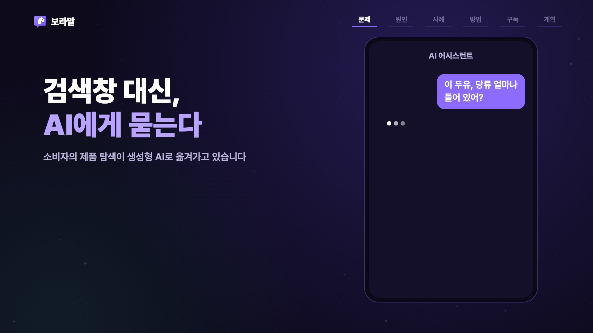
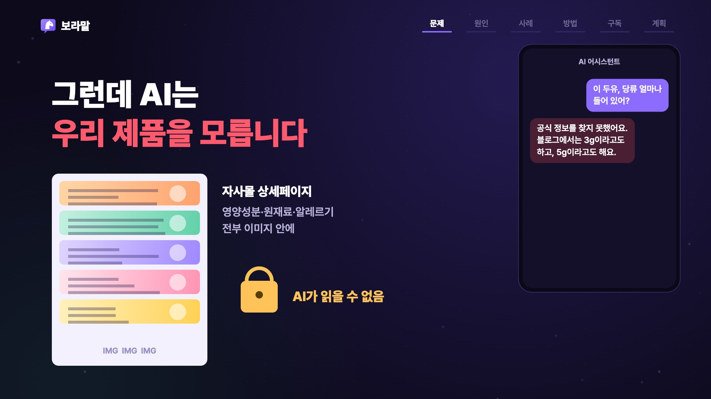
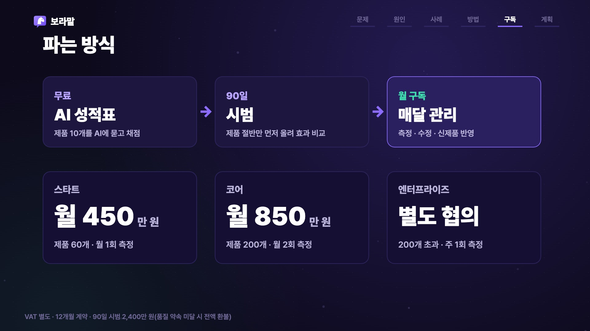
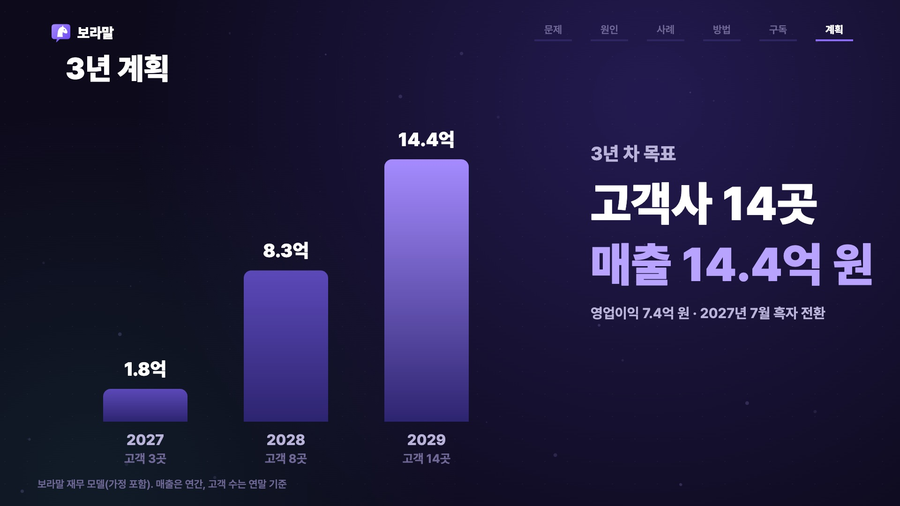
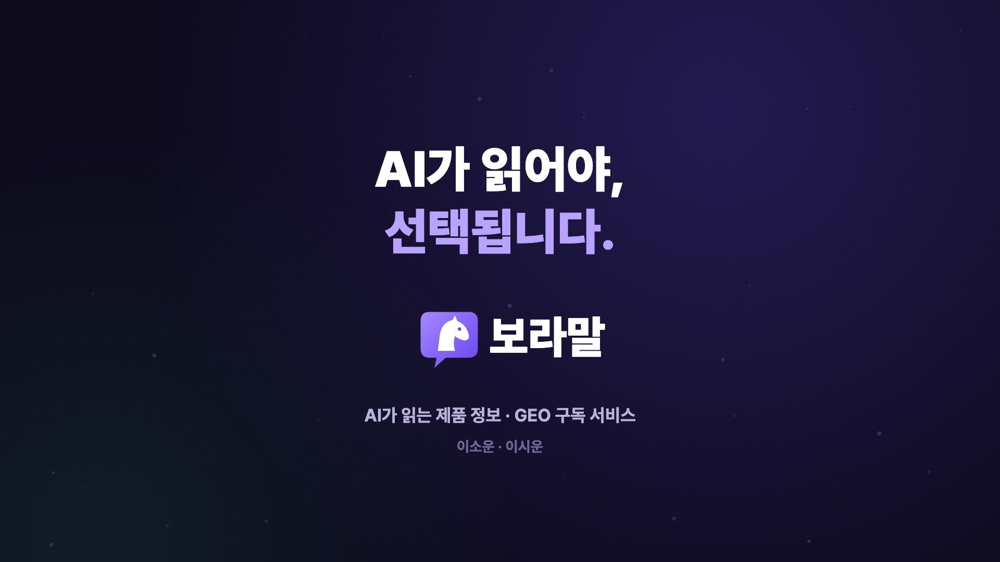
| 단계 | 도구와 방법 |
|---|---|
| 대본·나레이션 | 장면별 문장 8개를 쓰고 ElevenLabs(eleven_v4, 한국어)로 녹음. 음성 인식(faster-whisper)으로 발음 검수 |
| 장면 시간 | 나레이션 길이와 글자별 타이밍으로 장면 시작을 정함. '공공', 'AI 이미지' 같은 단어가 들리는 순간 해당 카드가 등장 |
| 그래픽 | HTML Canvas에 직접 그린 결정적 렌더러(__render(t)). 이징·스프링 애니메이션, 보라말 로고(말풍선+말 머리)도 코드로 디자인 |
| 렌더링 | Puppeteer로 1920×1080 30fps 2,130프레임을 찍어 ffmpeg(H.264)로 인코딩 |
| 음향 | Mixkit 무료 음원 'Digital Clouds' + 나레이션 구간 자동 덕킹 + 코드로 합성한 전환 효과음, -14 LUFS |
소스: motion/index.html, tools/render.mjs, tools/vo.py, tools/mix.py. 폰트 Pretendard(OFL).
모션그래픽이 사업을 설명한다면, 영화는 같은 문제를 한 엄마의 하룻밤으로 느끼게 합니다. 밤에 AI가 답하지 못한 질문이, 보라말을 거친 다음 날 아침 공식 정보로 답해집니다. 화면 전체를 종이접기 질감으로 만들어, 종이(상세페이지 이미지)에 갇힌 정보를 접고 펼쳐 꺼낸다는 사업의 이야기를 시각으로 옮겼습니다.
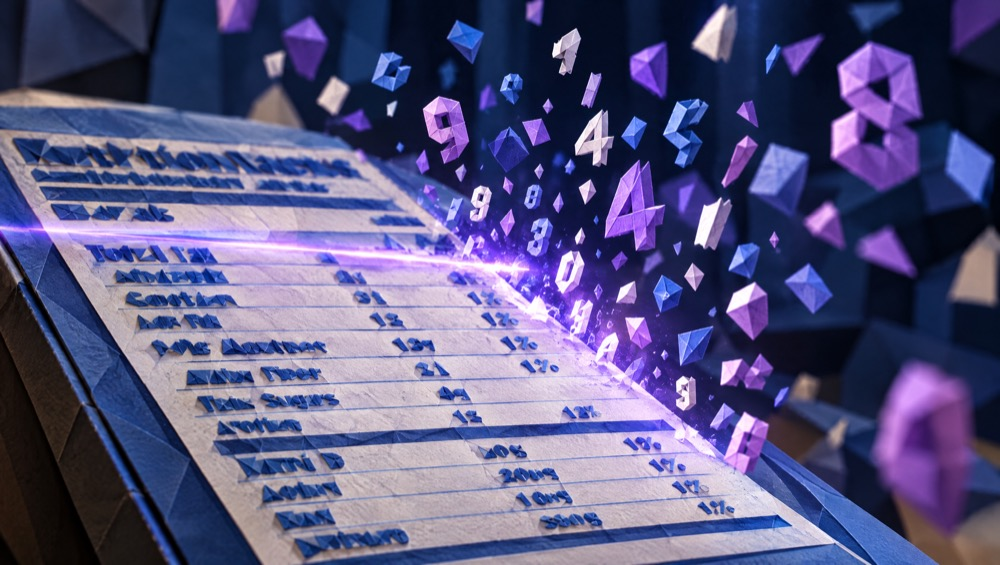
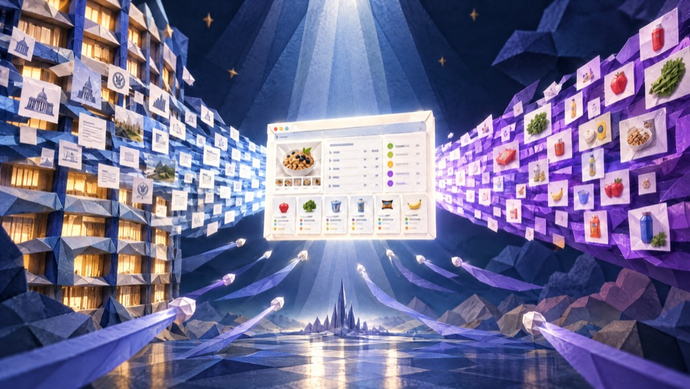
| 단계 | 도구와 방법 |
|---|---|
| 실제 인물 | 보라말 형제는 이소운·이시운 본인 사진 3장을 참조로 넣어 실제 얼굴을 살리고 옷만 브랜드 색(보라 계열)으로 바꾼 기준 이미지를 먼저 만든 뒤, 종이 인형이 되어도 알아볼 수 있게 장면마다 다시 참조 |
| 장면 첫 프레임 | Higgsfield GPT Image 2.5(2K, 16:9)로 실사 장면 7장을 먼저 만들고, 같은 구도를 유지한 채 종이접기 디오라마 질감으로 다시 그림. 화면 속 글자는 AI가 깨뜨리기 쉬워 편집에서 대화 UI를 얹음 |
| 영상 생성 | Higgsfield Kling 3.0 이미지→영상, 컷당 10초 × 7(종이 인형의 움직임과 카메라 이동을 컷마다 지정). 영상 변환 프리셋(Origami)도 시험했지만 8fps로 끊겨 보여 모든 장면을 같은 방식으로 통일. 소리는 끄고 크레딧 절약 |
| 편집 | ffmpeg로 0.5초 교차 전환, 제목·자막·대화 UI·단계 라벨 오버레이, 모션그래픽과 같은 엔딩 카드 |
| 음향 | ElevenLabs 나레이션(여성, 7문장) + Mixkit 'A New Life'(조용히 시작해 커지는 곡을 이야기의 전환점에 맞춤) + 덕킹 |
소스: film/keyframes/prompts.tsv, film/motion.tsv, tools/film_edit.py. 사용 크레딧은 README에 기록.
| 경로 | 내용 |
|---|---|
deliverables/1_모션그래픽_보라말_GEO.mp4 | 모션그래픽, 1분 11초, 1920×1080 |
deliverables/2_AI영화_보라말_GEO_읽히지않는제품.mp4 | AI 영화, 1분 10초, 1920×1080 |
deliverables/3_사업계획서_보라말_GEO.pdf | 이 보고서 |
prototype/ | 작동하는 GEO 파이프라인 시제품과 생성된 사이트 |
motion/ · film/ · tools/ · script/ | 모션그래픽 소스, AI 영화 프롬프트·편집, 렌더·음향 스크립트, 대본 |
시험 수치(21→99%, 26→86%)는 자료를 AI에 직접 넣은 조건의 결과이며 실제 AI 검색 답의 보장값이 아닙니다. 재무 수치는 가정이 포함된 모델 값이고 매출 실적은 아직 없습니다. 보라말 형제는 본인 사진을 바탕으로 AI가 만든 모습이고, 그 밖의 인물·제품·대화는 연출이며, 모션그래픽의 AI 대화(당류 3g·5g)는 문제를 보여 주기 위한 예시입니다. 시제품의 제품은 가상 제품입니다.